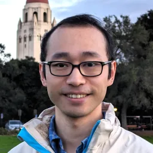
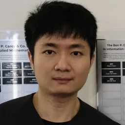

Code agents have passed many exams in the digital world. What is their first exam to enter the physical world?
EmbodiedFirst Exam
Leaderboard
Task diversity
The suites
The unified framework
Our Team
- Kangrui Wang*§Northwestern
- Qineng Wang*§Northwestern
- Changhe Chen*§Northwestern
- Pingyue Zhang*§Northwestern
- Chi Gui*§Northwestern
- Feishi Wang§Northwestern
- Canyu Chen§Northwestern
- Wenli Xiao§CMU
- Xiaoyu Huang§UC Berkeley
- Tonghe Zhang§CMU
- Linjie Li§UW
- Zihan WangNorthwestern
- Minyeong KimStanford
- Yiyou SunUC Berkeley
- Mingkai DengCMU
- Jinyu HouCMU
- Eric P. XingCMU
- Han LiuNorthwestern
- Qi ZhuNorthwestern
- Huaxiu YaoUNC-Chapel Hill
- Zhiwen FanTexas A&M

Yuejiang LiuStanford- Dawn SongUC Berkeley
- Pieter AbbeelUC Berkeley
- Jiajun WuStanford
- Yuke ZhuUT Austin

Guanya Shi†CMU- Ruohan Zhang†Northwestern
- Manling Li†Northwestern
* Equal contribution · § Core contributor · † Equal advising